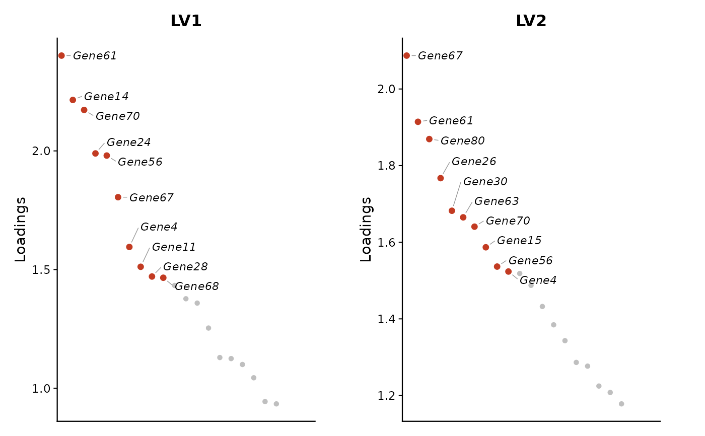

For each selected latent variable, ranks genes by their Z loading and plots
the top genes as a loading-versus-rank scatter plot. The highest ranking
genes are labelled with ggrepel.
Usage
CLAMPplotTopZ(
clampRes,
data = NULL,
priorMat = NULL,
top = 50,
index = NULL,
allLVs = FALSE,
label.top = min(10, top),
max.name.len = 50
)Arguments
- clampRes
A CLAMP result list containing at least
Z, and optionallyUfor selecting LVs with pathway support.- data
Deprecated; retained for backward compatibility and ignored.
- priorMat
Deprecated; retained for backward compatibility and ignored.
- top
Number of top genes to plot per LV. Default
50.- index
Integer or character vector of LV columns to include.
NULLkeeps LVs with non-zeroUentries whenUis present.- allLVs
Logical; if
TRUE, all LVs are eligible whenindex = NULL. DefaultFALSE.- label.top
Number of top genes to label per LV. Default
min(10, top).- max.name.len
Maximum characters for displayed gene labels.
Value
A ggplot2::ggplot() object for one LV, or a patchwork object for
multiple LVs.
Examples
set.seed(1)
genes <- paste0("Gene", 1:80)
lvs <- paste0("LV", 1:4)
paths <- paste0("Path", 1:10)
Z <- matrix(abs(rnorm(80 * 4)),
nrow = 80,
dimnames = list(genes, lvs)
)
U <- matrix(abs(rnorm(10 * 4)),
nrow = 10,
dimnames = list(paths, lvs)
)
clampRes <- list(Z = Z, U = U)
CLAMPplotTopZ(clampRes, top = 20, index = 1:2)
